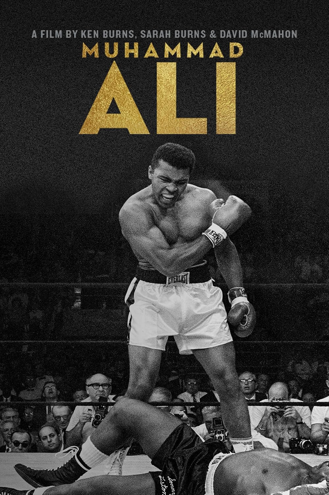
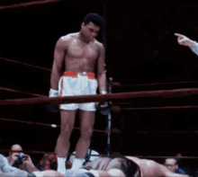
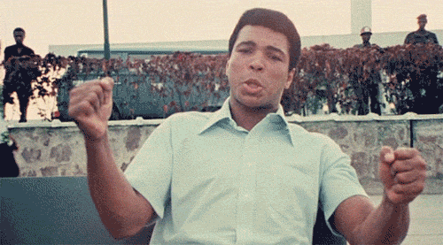

მუჰამედ ალი
The Greatest of All Time
ბოქსის ისტორიის #1 მებრძოლი და აქტივისტი
ბიოგრაფია
სრული სახელი: Cassius Marcellus Clay Jr.
დაბადებული: 17 იანვარი 1942, ლუივილი, კენტუკი
გარდაიცვალა: 3 ივნისი 2016
სიმაღლე: 191 სმ, წონა: 97 კგ
ოჯახი: 9 შვილი, 4 ცოლი
პროფესიული კარიერა
- პროფესიონალი: 1960-1981 (21 წელი)
- 56 მოგება, 5 წაგება
- 37 ნოკაუტი
- 3-ჯერ მსოფლიო ჩამპიონი მძიმე წონაში
- ოქროს მედალი 1960 ოლიმპიადაზე

ლეგენდარული ბრძოლები
- Sonny Liston (1964) - პირველი ტიტული
- Joe Frazier I, II, III (1971-1975) - "Fight of the Century"
- George Foreman (1974) - "Rumble in the Jungle"
- Joe Frazier III (1975) - "Thrilla in Manila"
- Leon Spinks (1978) - მესამე ტიტული 41 წლის ასაკში

ცნობილი ციტატები
"Float like a butterfly, sting like a bee"
"I am the greatest, I said that even before I knew I was"
"It's not bragging if you can back it up"
"Champions aren't made in the gyms. Champions are made from something they have deep inside
them"
"Don't count the days, make the days count"

მემკვიდრეობა
- საუკეთესო მებრძოლი ESPN-ის მიხედვით
- სპორტსმენი N#1 XX საუკუნეში
- პრეზიდენტის თავისუფლების მედალი
- აქტივიზმი: ვიეტნამის ომის საწინააღმდეგო
ციტატა: "Service to others is the rent you pay for your room here on Earth."